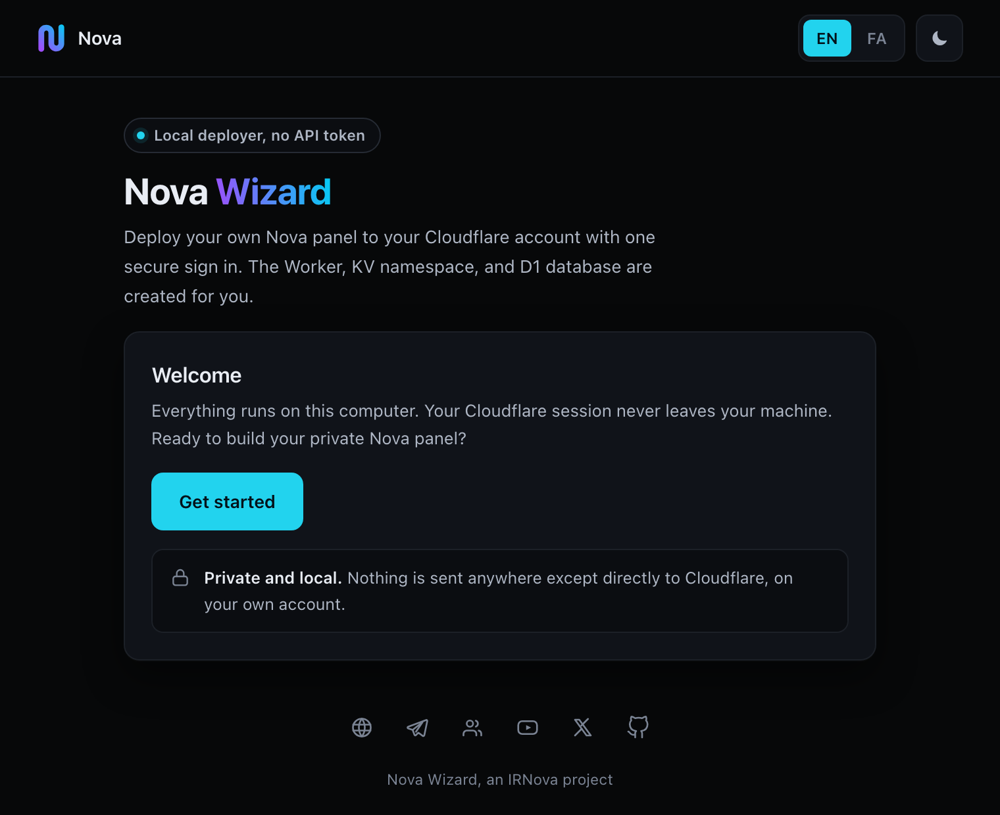

A Nova panel without Telegram
Nova Wizard runs on your own computer. It opens a page in your browser, you sign in to Cloudflare once, and it builds a Nova Proxy panel on your own Cloudflare account. You do not create an API token, and your Cloudflare sign-in never passes through a server of ours.
Pick your route first
Two tools can do this for you. One of them is much less work, and this page is not it.
The Telegram bot
One conversation with a bot. Nothing to install and no terminal. Most people should use this.
Open the bot on TelegramNova Wizard
For people who will not use Telegram. You run a small program on your own machine and do the Cloudflare sign-in yourself.
You are reading about this one.What happens when you run it
The wizard counts six steps on screen. This is what it is doing behind them.
-
You start it
One command in a terminal, or a double click on Windows. The terminal window stays open the whole time; closing it stops the wizard.
-
A local page opens
The wizard serves a page on
127.0.0.1and opens your browser on it. The address carries a token that is new every run and only works on your own machine. -
You sign in to Cloudflare
Cloudflare opens in a second tab and asks you to approve access. Approve it, close that tab, and come back to the wizard page.
-
You name the parts
Choose which Cloudflare account to deploy on. The wizard fills in random names for the Worker, the KV namespace and the D1 database. Edit them or leave them as they are.
-
It deploys
The wizard downloads the protected Nova Proxy release, uploads it to your account, creates the KV namespace and the D1 database, binds them to the Worker, and shows you the panel address.

Before you start
- A Cloudflare account
- A free one is enough. You sign in during step 3. The wizard never asks you to create an API token or an API key.
- Python 3.8 or newer
- Already present on macOS and on most Linux systems. Check with
python3 --version. On Windows you can skip Python and use the prebuilt program below. - A terminal
- One window and three commands. If reading that sentence made you tense, the Telegram bot is the better tool for you.
- A connection that reaches Cloudflare
- The wizard talks to Cloudflare and to GitHub. If either one will not open for you, turn on whatever VPN you already use before you start.
What leaves your machine. Your Cloudflare sign-in and the access token it produces stay on your computer, and the wizard hands that token back to Cloudflare when you close it.
One thing does travel. After a deploy succeeds the wizard posts a single line to the counter on novaproxy.online: a hash of the panel address, so one panel is counted once across the bot, the website and this tool. The panel address itself is not sent.
Run it
One command. It downloads a single file and runs it. There is no repository to clone and you do not need git.
macOS, Linux, or Windows with Python
curl -fsSL https://novaproxy.online/wizard.py -o nova_wizard.py && python3 nova_wizard.pyThe terminal then prints something like this:
====================================================== Nova OAuth Wizard Cloudflare Worker + KV + D1 Deployer ====================================================== URL: http://127.0.0.1:8000/?token=Lkp3yEnpM8fNMPon... JS: /home/you/Nova-Wizard/worker.js [!] worker.js not found! 1. Open browser 2. Click 'Login with Cloudflare' 3. Authorize on Cloudflare 4. Enter names + Deploy
Your browser should open on that address by itself. If it does not, paste the whole line into the browser yourself, token and all. The worker.js not found line on a first run is normal: the wizard downloads the panel later, when you press Deploy.
Windows without Python
There is a prebuilt program, about 8.4 MB, 64 bit, portable. Download it, double click it, and the same local page opens.
Build that program yourself
From BUILD.md. This part needs Windows and Python 3.14 or newer, and the static folder has to sit next to nova_wizard.py when you build.
pip install pyinstaller Pillow
pyinstaller --onefile --name NovaWizard --add-data "static;static" --icon app.ico nova_wizard.pyThe finished program lands at dist/NovaWizard.exe.
What ends up on your Cloudflare account
- A Worker running the Nova Proxy panel, on a workers.dev address.
- A KV namespace, created and bound to that Worker.
- A D1 database, created and bound to that Worker.
All three names are random by default, and all three are editable on the screen before you press Deploy. It does not touch anything else on your account.
When it finishes, the wizard shows the panel address and the details for your first sign-in. Open the panel and set your own admin password straight away.
Nova Wizard, an IRNova project.